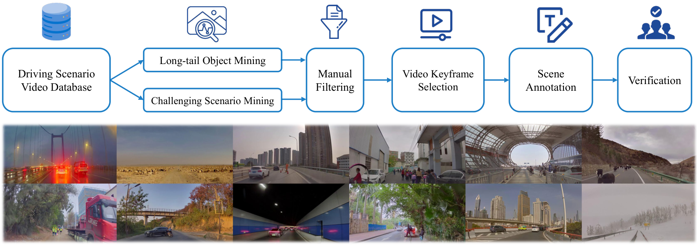
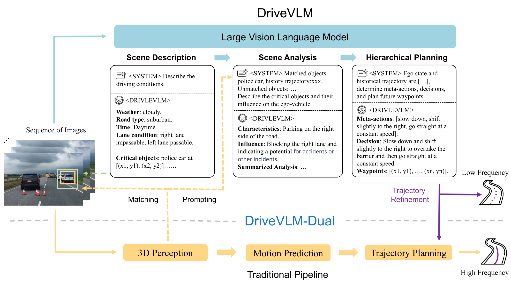
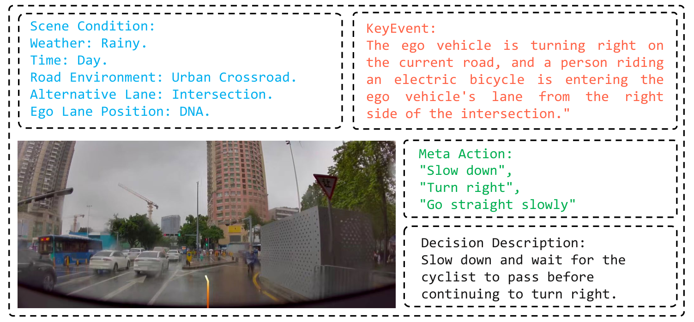
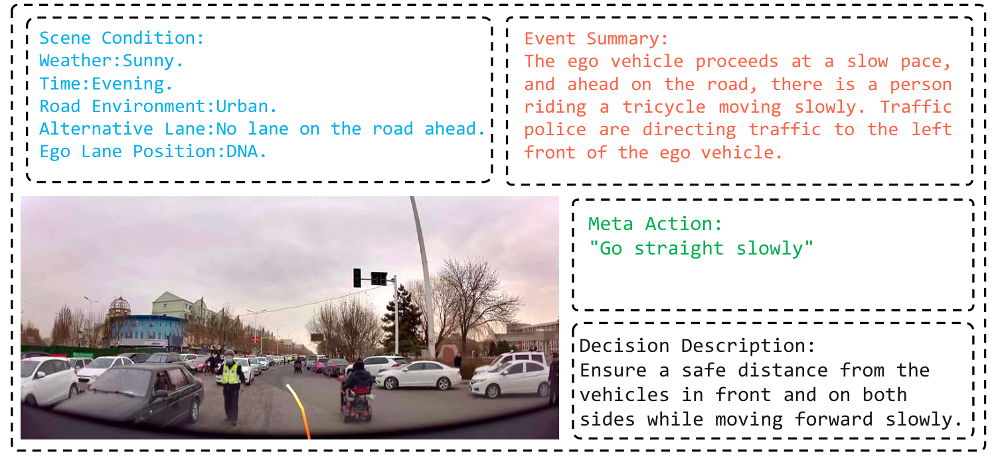
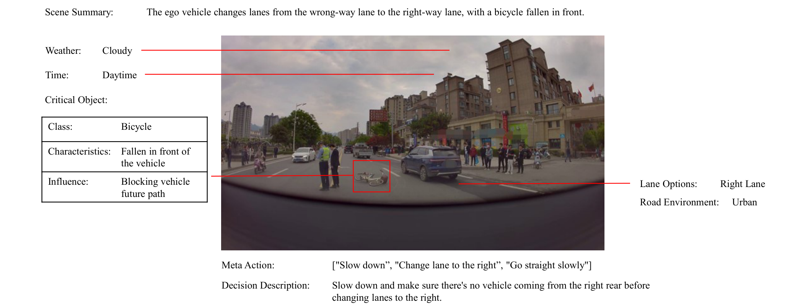
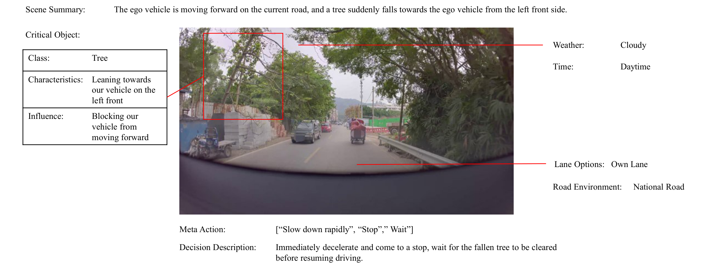
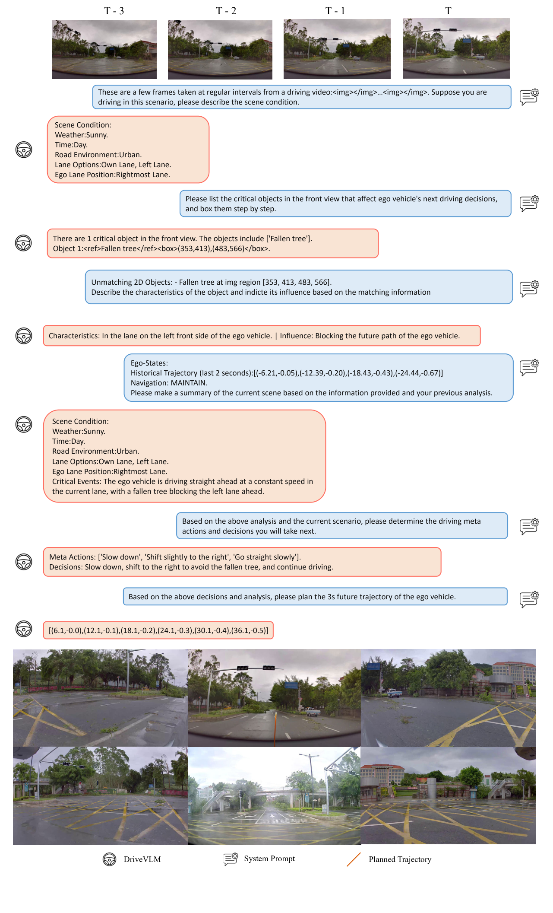

0. 页面头部：论文身份卡片
| 论文 | DriveVLM: The Convergence of Autonomous Driving and Large Vision-Language Models |
|---|---|
| 作者 | Tian, Xiaoyu；Gu, Junru；Li, Bailin；Liu, Yicheng；Wang, Yang；Zhao, Zhiyong；Zhan, Kun；Jia, Peng；Lang, Xianpeng；Zhao, Hang |
| 时间 | 2024/02/19 |
| 方向 | VLM reasoning + dual-system planning |
| 核心贡献 | DriveVLM 用 VLM 进行场景描述、场景分析和层级规划，并提出 DriveVLM-Dual 将 VLM 语义推理与传统 3D 感知/规划管线融合，在复杂场景理解和 nuScenes 规划上提升安全性。 |
| 模型类型 | 以 VLM 进行场景描述、场景分析与分层规划，并用 DriveVLM-Dual 将语言推理与传统 3D 感知/规划管线融合。 |
| 输入 | 多相机图像；Dual 版本额外接收传统 3D 感知、轨迹与结构化几何信息。 |
| 中间表示 | Chain-of-Thought 依次形成场景描述、关键对象/风险分析、meta-action 与 waypoint；Dual 路线将语义规划与数值规划结果融合。 |
| 输出 | 层级驾驶决策、meta-action 与未来轨迹，而不是直接低层车辆执行器控制。 |
| 训练目标 | 在 SUP-AD 指令/分析/规划标注上进行多任务生成训练，并以轨迹误差和规划指标监督数值输出。 |
| 代码与复现状态 | 部分：论文与项目材料公开，完整生产系统不可复现；高：适合作为 VLM 参与场景理解/层级规划的代表 |
1. 论文速览：用一页讲清楚价值
1.1 一句话贡献
DriveVLM 用 VLM 进行场景描述、场景分析和层级规划，并提出 DriveVLM-Dual 将 VLM 语义推理与传统 3D 感知/规划管线融合，在复杂场景理解和 nuScenes 规划上提升安全性。
1.2 论文专属关键词
Vision-Language Model、Chain-of-Thought、SUP-AD、DriveVLM-Dual、hierarchical planning、scene analysis、nuScenes、production vehicle
1.3 技术定位
以 VLM 进行场景描述、场景分析与分层规划，并用 DriveVLM-Dual 将语言推理与传统 3D 感知/规划管线融合。
1.4 论文构建了什么
| 输入 | 多相机图像；Dual 版本额外接收传统 3D 感知、轨迹与结构化几何信息。 |
|---|---|
| 编码与融合 | Chain-of-Thought 依次形成场景描述、关键对象/风险分析、meta-action 与 waypoint；Dual 路线将语义规划与数值规划结果融合。 |
| 输出 | 层级驾驶决策、meta-action 与未来轨迹，而不是直接低层车辆执行器控制。 |
| 训练目标 | 在 SUP-AD 指令/分析/规划标注上进行多任务生成训练，并以轨迹误差和规划指标监督数值输出。 |
1.5 核心结论与证据链
DriveVLM 的定位是“慢思考语义系统 + 快速几何管线”。纯 VLM 可以从图像生成场景描述、对象级分析、meta-action 和决策解释，但 VLM 的空间定位和推理时延不足以独立承担低层规划；因此作者提出 DriveVLM-Dual，把 VLM 的长尾理解能力接到传统 3D 感知与规划输出上。论文在 SUP-AD 上报告 DriveVLM w/ Qwen 的 scene description 得分 0.71、meta-actions 得分 0.37，优于 Lynx/CogVLM/GPT-4V 设置；在 nuScenes 规划中，DriveVLM-Dual† 达到 Avg. L2=0.31m、Avg. Collision=0.10%，优于 VAD-Base 的 0.37m/0.14%。
核心证据来自：SUP-AD 主结果、DriveVLM 与 DriveVLM-Dual 对比、模型规模/CoT/3D 信息消融和非常规场景定性案例。。证据边界是：精致语言解释不等于决策真正依赖该解释；离线轨迹指标也不能替代长时间闭环碰撞率。
2. 研究问题与动机：为什么需要这篇论文
2.1 核心问题与成功标准
城市自动驾驶的难点并不只在检测常见车辆，而在复杂路况、警察手势、稀有物体、施工和人类意图。传统 pipeline 擅长几何定位，但很难自然描述“为什么要让行”；VLM 擅长语义和常识，却不擅长精确 3D 空间和实时控制。DriveVLM 选择 dual-system，是因为直接让大 VLM 输出低层轨迹会带来时延和空间误差，而把它作为高层语义推理器可以补齐长尾理解。
2.2 现有方法的具体不足
该论文针对的瓶颈不是笼统的“泛化不足”，而是：纯 VLM 推理缺乏精确 3D 几何；纯传统规划难利用开放词汇语义与非常规场景知识，因此论文保留双系统。
2.3 为什么不走显而易见的替代路线
纯 VLM 推理缺乏精确 3D 几何；纯传统规划难利用开放词汇语义与非常规场景知识，因此论文保留双系统。
3. 相关工作脉络：这篇论文从哪里来
3.1 技术家族与直接前作
相关工作包括自动驾驶场景描述/QA、VLM CoT 推理、传统 BEV 3D 感知与 VAD/UniAD 规划。DriveVLM 相对 GPT-Driver 的差异是输入从结构化文本/预测结果扩展到图像理解；相对 LMDrive 的差异是它更强调 VLM 的场景解释和层级规划，并用 dual-system 保留传统模块的实时与空间优势。
3.2 本文新意属于表示、架构、训练还是评估
从技术地图看，本文的主要新意可概括为：以 VLM 进行场景描述、场景分析与分层规划，并用 DriveVLM-Dual 将语言推理与传统 3D 感知/规划管线融合。。它并非简单替换 backbone，而是围绕输入表示、中间信息流或评价方式重新定义了论文的核心问题。
4. 方法总览图：先看完整信息流
4.1 主框架图与机制

4.2 信息流一句话串联
输入：多相机图像；Dual 版本额外接收传统 3D 感知、轨迹与结构化几何信息。；中间处理：Chain-of-Thought 依次形成场景描述、关键对象/风险分析、meta-action 与 waypoint；Dual 路线将语义规划与数值规划结果融合。；最终输出：层级驾驶决策、meta-action 与未来轨迹，而不是直接低层车辆执行器控制。；训练约束：在 SUP-AD 指令/分析/规划标注上进行多任务生成训练，并以轨迹误差和规划指标监督数值输出。
5. 方法详解：输入、表示、融合、解码、训练与部署
5.1 输入表示
多相机图像；Dual 版本额外接收传统 3D 感知、轨迹与结构化几何信息。。复现时首先要确保各模态的时间同步、坐标系、可见范围与训练时一致；任何一个上游输入偏移都可能被后续大模型放大。
5.2 编码器与融合设计
Chain-of-Thought 依次形成场景描述、关键对象/风险分析、meta-action 与 waypoint；Dual 路线将语义规划与数值规划结果融合。
5.3 中间表示为何重要
中间表示决定模型保留何种几何、语义和时间信息。该论文的关键中间链路是：Chain-of-Thought 依次形成场景描述、关键对象/风险分析、meta-action 与 waypoint；Dual 路线将语义规划与数值规划结果融合。。它让最终输出能够利用这些信息，但也把上游表示误差带入规划或预测。
5.4 解码、动作生成或未来预测
层级驾驶决策、meta-action 与未来轨迹，而不是直接低层车辆执行器控制。
5.5 训练目标及副作用
在 SUP-AD 指令/分析/规划标注上进行多任务生成训练，并以轨迹误差和规划指标监督数值输出。。这些目标直接约束对应监督输出，却不会自动保证真实闭环安全、跨域鲁棒性或因果可解释性。
5.6 训练阶段与数据风险
DriveVLM pipeline 包含三层语言化输出：scene description 描述道路、对象和环境；scene analysis 分析关键对象及风险；hierarchical planning 生成 meta-action 与可解释决策。DriveVLM-Dual 在此基础上接入传统 3D perception 和 trajectory planning，把 VLM 的语义判断作为高层约束或决策辅助，而非完全替代 planner。SUP-AD 数据集通过数据挖掘和自动/人工标注构造复杂场景问答与规划样例，训练时还与 Talk2Car、BDDX、Drama、SUTD、LLaVA 等数据 co-tuning，降低 VLM 灾难性遗忘。
5.7 推理与部署流程
属于离线规划验证与系统融合研究；真实闭环时仍需要稳定感知、控制器和安全规则。
6. 原论文图解：逐图拆解证据含义
7.1 Figure 2：The proposed data mining and annotation pipeline for constru
7.2 Figure 6：DriveVLM and DriveVLM-Dual model pipelines. DriveVLM takes i

7.3 Figure 5：Qualitative results of DriveVLM. The orange curves represent


7.4 Figure 10：An example of overturned bicycles and motorcycles in the SUP

7.5 Figure 12：An example of collapsed trees in the SUP-AD dataset. A tree

7.6 Figure 18：Visualization of DriveVLM's output. DriveVLM precisely detec

7. 实验与结果：把证据链拆开
7.1 数据集、任务与划分
实验围绕该论文的技术定位组织：以 VLM 进行场景描述、场景分析与分层规划，并用 DriveVLM-Dual 将语言推理与传统 3D 感知/规划管线融合。。需要特别区分离线预测、生成质量、开环规划与真实/仿真闭环，因为它们使用不同成功标准；本论文主要证据为：SUP-AD 主结果、DriveVLM 与 DriveVLM-Dual 对比、模型规模/CoT/3D 信息消融和非常规场景定性案例。
7.2 Baseline 为什么重要
论文的比较应围绕其技术定位理解：以 VLM 进行场景描述、场景分析与分层规划，并用 DriveVLM-Dual 将语言推理与传统 3D 感知/规划管线融合。。强 baseline 用来判断收益来自新增信息流、模型容量还是评估协议；仅与较弱旧方法比较不足以证明论文主张。
7.3 指标如何对应论文主张
本文实验所依赖的证据为：SUP-AD 主结果、DriveVLM 与 DriveVLM-Dual 对比、模型规模/CoT/3D 信息消融和非常规场景定性案例。。离线预测误差、生成质量、规划指标或闭环分数各自只衡量部分能力，不能互相替代。
7.4 主结果与机制是否一致
实验包括 SUP-AD 场景理解和 nuScenes 开环规划。SUP-AD Table 1 显示 DriveVLM w/ Qwen 在 scene description 和 meta-actions 上分别为 0.71 和 0.37；GPT-4V in-context 只有 0.38 和 0.19，说明专门驾驶数据调优明显重要。nuScenes Table 2 中 DriveVLM-Dual† 的 Avg. L2=0.31m、Avg. Collision=0.10%，优于 VAD-Base 和单独 DriveVLM。定性图展示骑行者、交警手势等长尾场景解释。证据缺口是 dual-system 部分依赖传统管线，难以说明 VLM 本身能完成全部低层控制。
8. 消融、失败案例与证据缺口
8.1 消融实验应回答什么
最关键的消融需要隔离该论文的核心信息流：SUP-AD 主结果、DriveVLM 与 DriveVLM-Dual 对比、模型规模/CoT/3D 信息消融和非常规场景定性案例。。如果去掉核心模块后只在部分指标下降，需要进一步判断收益是否集中于特定场景。
8.2 失败案例与证据缺口
精致语言解释不等于决策真正依赖该解释；离线轨迹指标也不能替代长时间闭环碰撞率。
8.3 论文没有证明什么
现有结果不能直接推出：精致语言解释不等于决策真正依赖该解释；离线轨迹指标也不能替代长时间闭环碰撞率。
9. 复现要点：真正动手会遇到什么
9.1 最小可行复现路线
复现应先复刻 SUP-AD 风格数据：给每个场景生成图像、对象描述、meta-action 和决策说明；随后用 Qwen/LLaVA 类 VLM 做 instruction tuning，再接入已有 3D planner 形成 Dual。计算资源主要取决于 VLM fine-tuning 和 nuScenes 数据预处理。没有生产车系统代码时，复现验收应聚焦两个指标：SUP-AD 语义分数能接近论文趋势，DriveVLM-Dual 在同一 planner 上能降低 L2/Collision。
9.2 数据、模型、硬件与阻塞点
数据与接口重点：多相机图像；Dual 版本额外接收传统 3D 感知、轨迹与结构化几何信息。。模型重点：Chain-of-Thought 依次形成场景描述、关键对象/风险分析、meta-action 与 waypoint；Dual 路线将语义规划与数值规划结果融合。。部署重点：属于离线规划验证与系统融合研究；真实闭环时仍需要稳定感知、控制器和安全规则。。论文未明确披露的硬件与训练成本不在此推测。
9.3 验收标准
复现成功不应只以脚本运行结束为标准，而应至少复现论文核心趋势：SUP-AD 主结果、DriveVLM 与 DriveVLM-Dual 对比、模型规模/CoT/3D 信息消融和非常规场景定性案例。；同时检查输出是否在论文声称的边界外快速退化。
10. 分析、局限与边界：作者没说完的部分
10.1 最有价值贡献
DriveVLM 的价值在于承认 VLM 与几何 planner 各有短板，用双系统把语义泛化和几何安全结合。论文证据支持“VLM 语义推理能改善长尾规划”，但不能证明端到端 VLM 可独立实时驾驶。后续可以尝试把 VLM 输出约束转成可微 reward 或形式化 safety predicate，而不是只作为自然语言决策。
10.2 主张—证据—充分性
| 论文主张 | 以 VLM 进行场景描述、场景分析与分层规划，并用 DriveVLM-Dual 将语言推理与传统 3D 感知/规划管线融合。 |
|---|---|
| 支撑证据 | SUP-AD 主结果、DriveVLM 与 DriveVLM-Dual 对比、模型规模/CoT/3D 信息消融和非常规场景定性案例。 |
| 充分性判断 | 对论文评测范围内的机制结论较有支持；对真实闭环、跨域或安全泛化仍不足。 |
| 原因 | 精致语言解释不等于决策真正依赖该解释；离线轨迹指标也不能替代长时间闭环碰撞率。 |
10.3 可行改进方向
对 CoT 做因果干预；将语言分析转成可验证规划约束；在闭环仿真中测试推理错误累积。
10.4 后续实验建议
| 核心模块去除/替换 | 隔离论文主张，观察核心指标是否按预期下降 |
|---|---|
| 跨域或扰动测试 | 检查方法是否依赖训练分布和干净输入 |
| 闭环 rollout | 观察误差累积、碰撞与恢复 |
| 不确定性/安全验证 | 识别高风险预测并建立 fallback |
11. 组会问答准备
Q: 为什么需要 DriveVLM-Dual？
A: 因为 VLM 的空间推理和推理时延不足以直接承担实时低层规划，Dual 保留传统 3D 管线的几何精度，同时引入语义推理。
Q: SUP-AD 解决了什么问题？
A: 它提供复杂场景的描述、分析、meta-action 和决策标注，用于训练 VLM 理解驾驶长尾语义。
Q: DriveVLM 和 GPT-Driver 的本质区别？
A: GPT-Driver 主要把结构化感知/预测结果转成语言做轨迹生成；DriveVLM 从图像/VLM 出发做场景理解，并通过 Dual 接几何 planner。
Q: 实验最能支撑哪条结论？
A: DriveVLM-Dual 在 nuScenes Avg. L2 和 Collision 上优于 VAD-Base，说明语义高层信号能改进已有 planner。
Q: 复现最难是什么？
A: SUP-AD 标注和 Dual 系统接口，尤其是如何把 VLM 语义输出稳定转成 planner 可用约束。
12. 我的阅读笔记：转成自己的研究素材
12.1 最值得借鉴的点
适合作为“慢思考 VLM + 快速 planner”的代表。组会可重点比较 LMDrive 的闭环语言控制和 DriveVLM 的 dual-system 语义辅助，两者不是同一层次的端到端。
12.2 与同目录论文的比较钩子
可从“语言是否直接影响动作、是否显式预测未来世界、是否真实闭环、是否保留 3D 几何、是否使用 agent/tool/memory”五条轴与同目录论文比较。本文的定位为：以 VLM 进行场景描述、场景分析与分层规划，并用 DriveVLM-Dual 将语言推理与传统 3D 感知/规划管线融合。
12.3 可行动创新点
对 CoT 做因果干预；将语言分析转成可验证规划约束；在闭环仿真中测试推理错误累积。
13. 附录图解与证据索引
本文使用的原始图件均来自 arXiv 源码，图注保留或准确转述。其他附录图未被机械堆入页面；只有能够解释方法、结果、消融或失败的图件才被选择。